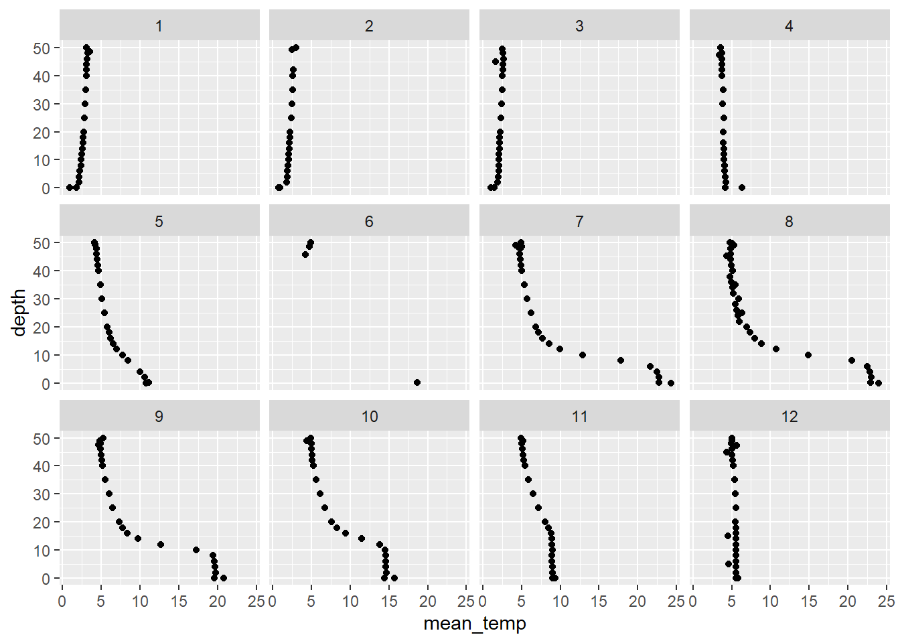

Introductory R

Welcome to programming in R! This module will serve as a tutorial to help you get acquainted with the R programming environment, and get you started with some basic tools and information to help along the way. We won’t follow this internet module to the letter in our time together, but we will discuss the same topics, and in about the same order. Hopefully, this tutorial will be helpful in either preparing you for the workshop or for revisiting important concepts after the workshop.
Like any language, the learning curve for R is steep (like a cliff, not a hill), but once you get the hang of it you can learn a lot quickly. Cheat sheets like the tutorial from the workshop (or these) can help you along the way by serving as handy references.
Working with code
We will spend a bit of time during the introductory session to orient attendees with the RStudio IDE and talk about file management. Here are some additional pointers about working with code.
There are a lot of different ways to write computer code. Each has pros and cons and all of them are intended to increase efficiency and readability. There is no “right” way to edit your code, but it will make your life easier if you find a style you like and stick to those conventions. Here are a couple of points that can be helpful when you are just starting out:
Commenting code is helpful
# This is a comment.
# We know because it is preceded
# by a hashtag, or 'octothorpe'.
# R ignores comments so you have
# a way to write down what you have
# done or what you are doing.
# This is useful for sharing
# code or just figuring out
# what you did.There are a few ways to run code:
Click on a line of code and press
Ctrl + Enter.Highlight a chunk of code and do the same.
Either 1 or 2, but press the
Runbutton at the top of the source file to run the code block.Once you’ve run a code block you can change it and then press the button next to
Run(orCtrl + Shift + P) to ‘re-run’ the previous block of code.
Try it on your own!
Type the following line of code into a blank source file, and run it using one of the methods above.
# Add 1 and 1 together
1 + 1
[1] 2Some stricter R programming rules:
All code is in R is case sensitive.
# Example (run the following lines):
a <- 1
A <- 2
# Are these two things equal?
a == A
[1] FALSEWe have few things going on above.
We’ve defined a couple of objects for the first time. You do this by assigning the value on the right of the arrow to the variable on the left. We can use the assignment arrow
<-or an equal sign=. The former is preferred, but for our purposes it will make absolutely no difference, and=is faster to type than<-until you know your speed-key combinations.The
==that we typed is a logical test that checks to see if the two objects are identical. If they were, then R would have returned aTRUEinstead ofFALSE. This operator is very useful, and is common to a number of programming languages.Note in the output that the two objects are not the same, and R knows this when we test to see.
You can’t start an object name with a number, but you can end it with one.
# This won't work
1a <- 1
# But this one works
# Try it by typing
# a1,
# print(a) or
# show(a)
# in the console:
a1 <- 1R will overwrite objects sequentially, so don’t name two things the
same unless you don’t need the first. Even then it is risky business. In
the example below, our object a takes on the second value
provided and the first is lost.
a <- 1
a <- 2
a
[1] 2Some things can be expressed in multiple ways. For example, both
“T” and “TRUE” can be used to indicate a
logical value of TRUE.
T == TRUE
[1] TRUESome names are reserved or pre-defined. Did you notice that R already
knew what T and TRUE were without us defining
them? These reserved operators, and built in functions
are the building blocks of the R language.
For example,
in, if, else, for, function()…and a mess of others have special uses. If it is not obvious already, we should avoid using these words to name objects that we define in our source files.
Some symbols are also reserved for special use as operators, like:
+, -, *, /, % %, &, |, <, >, (, {, [, '', "", ...…and a bunch of others.
Some other handy tricks
The Home button will move you to the start of the line
of code, and to the start of the line if you press it twice. The
End button on your keyboard will take you to the end of a
line. These will help you move around your code faster.
The Tab button on your keyboard will move the code to
the right some number of spaces (user defined). Pressing
Shift + Tab will move code to the left. These can help you
organize your code quickly.
A single click of the mouse will move the cursor into position. Double-click will highlight the word you are clicking, and a triple left-click will highlight an entire line.
Use search and replace functionality to copy big chunks of code and
change names as needed. You can also use this to just search your code.
Press Ctrl + F to open the sub menu at the top. When code
gets so redundant that you copy and paste the same code several times,
you are probably better off writing a function that you can use whenever
you like.
Functions are the life blood
Functions make R what it is. These are all of the “commands” that are available to a user through the base software, or through packages that can be added on. When you can’t find the function you need, you can write one to do it (eventually). At their most basic level, functions do stuff to objects in R. This is what makes R both a functional programming language and an object-oriented programming language.
Data structures and manipulation
Vectors
Despite the wide range of uses you hear about, R is a statistical programming language at its core. It is not a mathematical language or a general programming language, although it has a lot of functionality outside this original scope. R is what is known as a “high-level” or “interpreted” language. This means the pieces that make it up are a little more intuitive to the average user than low-level languages like C or C++. The back-end of R is, in fact, a collection of low-level code that builds up the functionality that we need. Because anyone can write new functions for R, it has a broad range of uses, from data management to math, and even GIS and data visualization tools, all of which are conveniently wrapped in an “intuitive”, “user-friendly” language.
Part of this flexibility comes from the fact that R is also a “vectorized” language. Why do you care about that? This will help you wrap your head around how objects are created and stored in R, which will help you understand how to make, access, modify, and combine the data that you will need for any approach to data analysis.
Let’s take a look at how this works and why it matters. Here, we have
defined an object, a, as a variable with the value of
1…or have we?
a <- 1
a
[1] 1What is the square bracket in the output here? It’s an index. The
index is telling us that the first element of a is
1. This means that a is actually a “vector”,
not a “scalar” or singular value. You can think of a vector as a column
in a spreadsheet or a data table. By treating every variable as a
vector, or an element thereof, the language becomes much more
general.
So, even if we define something with a single value, it is still just a vector with one element. For us, this is important because of the way that it lets us do math. It makes vector operations so easy that we don’t even need to think about them when we start to make statistical models. It makes working through the math a zillion times easier than on paper! In terms of programming, it can make a lot of things easier, too.
The vector is the basic unit of information in R. Pretty much everything else is either made of vectors, or can be contained within one. Wow, what an existential paradox that is. Let’s play with some:
Atomic vectors
A vector that can hold one and only one kind of data:
- Character
- Numeric
- Integer
- Logical
- Factor
- Date/time
And some others, but none with which we’ll concern ourselves.
Below are some examples of atomic vectors. Run the code
to see what it does:
Integers and numerics
a <- c(1, 2, 3, 4, 5) # Make a vector of integers 1-5
print(a) # One way to look at our vector
[1] 1 2 3 4 5show(a) # Another way to look at it
[1] 1 2 3 4 5a # A third way to look at it
[1] 1 2 3 4 5str(a) # Look at the structure, integer class
num [1:5] 1 2 3 4 5Here is another way to make the same vector, but we need to pay
attention to how R sees the data type. A closer look shows that these
methods produce a numeric vector (num)
instead of an integer vector (int). For
the most part, this one won’t make a huge difference, but it can become
important when writing statistical models.
# Define the same vector using a sequence
a <- seq(from = 1, to = 5, by = 1)
str(a)
num [1:5] 1 2 3 4 5Characters and factors
Characters are anything that is represented as text strings.
b <- c("a", "b", "c", "d", "e") # Make a character vector
b # Print it to the console
[1] "a" "b" "c" "d" "e"str(b) # Now it's a character vector
chr [1:5] "a" "b" "c" "d" "e"b <- as.factor(b) # But we can change if we want
b
[1] a b c d e
Levels: a b c d estr(b) # Look at the data structure
Factor w/ 5 levels "a","b","c","d",..: 1 2 3 4 5Factors are a special kind of data type in R that we may run across from time to time. They have levels that can be ordered numerically. This is not important except that it becomes useful for coding variables used in statistical models- R does most of this behind the scenes and we won’t have to worry about it for the most part. In fact, in a lot of cases we will want to change factors to numerics or characters so they are easier to manipulate.
This is what it looks like when we code a factor as number:
as.numeric(b)
# What did that do?
?as.numericAside: we can ask R what functions mean by adding a question mark as we do above. And not just functions: we can ask it about pretty much any built-in object. The help pages take a little getting used to, but once you get the hang of it…in the mean time, the internet is your friend and you will find a multitude of online groups and forums with a quick search.
Logical vectors
Most of the logicals we deal with are yes/no or comparisons to
determine whether a given piece of information matches a condition.
Here, we use a logical check to see if the object a we
created earlier is the same as object b. If we store the
results of this logical check to a new vector c, we get a
new logical vector of TRUE and FALSE.
# The '==' compares the numeric vector to the factor one
c <- a == b
c
[1] FALSE FALSE FALSE FALSE FALSEstr(c)
logi [1:5] FALSE FALSE FALSE FALSE FALSEWe now have a logical vector. For the sake of demonstration, we could
perform any number of logical checks on a vector (it does not need to be
a logical like c above).
is.na(a) # We can check for missing values
[1] FALSE FALSE FALSE FALSE FALSEis.finite(a) # We can make sure that all values are finite
[1] TRUE TRUE TRUE TRUE TRUE!is.na(a) # The exclamation point means 'not'
[1] TRUE TRUE TRUE TRUE TRUEa == 3 # We can see if specific elements meet a criterion
[1] FALSE FALSE TRUE FALSE FALSEunique(b) # We can just look at unique values
[1] a b c d e
Levels: a b c d eThe examples above are all fairly simple vector operations. These form the basis for data manipulation and analysis in R.
Vector operations
A lot of data manipulation in R is based on logical checks like the ones shown above. We can take these one step further to actually perform what one might think of as a query.
For example, we can reference specific elements of vectors directly.
Here, we specify that we want to print the third element of
a.
# This one just prints it
a[3]
[1] 3# This one stores it in a new object
f <- a[3]Important
If it is not yet obvious, we have to assign the output of functions
to new objects for the values to be useable in the future. In the
example above, a is never actually changed. This
is a common source of confusion early on.
Going further, we could select vector elements based on some
condition. On the first line of code, we tell R to show us the indices
of the elements in vector b that match the character string
c. Outloud, we would say, “b where the value
of b is equal to c” in the first example. We
can also use built-in R functions to just store the indices for all
elements of b where b is equal to the
character string ‘c’.
b[b == "c"]
[1] c
Levels: a b c d ewhich(b == "c")
[1] 3Perhaps more practically speaking, we can do elemen-twise math operations on vectors easily in R.
a * .5 # Multiplication
[1] 0.5 1.0 1.5 2.0 2.5a + 100 # Addition
[1] 101 102 103 104 105a - 3 # Subtraction
[1] -2 -1 0 1 2a / 2 # Division
[1] 0.5 1.0 1.5 2.0 2.5a^2 # Exponentiation
[1] 1 4 9 16 25exp(a) # This is the same as 'e to the...'
[1] 2.718282 7.389056 20.085537 54.598150 148.413159log(a) # Natural logarithm
[1] 0.0000000 0.6931472 1.0986123 1.3862944 1.6094379log10(a) # Log base 10
[1] 0.0000000 0.3010300 0.4771213 0.6020600 0.6989700We can also do string manipulation really easily:
b <- as.character(b)
paste(b, "AAAA", sep = "") # We can append text
[1] "aAAAA" "bAAAA" "cAAAA" "dAAAA" "eAAAA"paste("AAAA", b, sep = "") # We can do it the other way
[1] "AAAAa" "AAAAb" "AAAAc" "AAAAd" "AAAAe"paste("AAAA", b, sep = "--") # Add symbols to separate
[1] "AAAA--a" "AAAA--b" "AAAA--c" "AAAA--d" "AAAA--e"gsub(pattern = "c", replacement = "AAAA", b) # We can replace text
[1] "a" "b" "AAAA" "d" "e" e <- paste("AAAA", b, sep = "") # Make a new object
e # Print to console
[1] "AAAAa" "AAAAb" "AAAAc" "AAAAd" "AAAAe"substr(e, start = 5, stop = 5) # We can strip text (or dates, or times, etc.)
[1] "a" "b" "c" "d" "e"We can check how many elements are in a vector.
length(a) # A has a length of 5, try it and check it
[1] 5a # Yup, looks about right
[1] 1 2 3 4 5And we can do lots of other nifty things like this.
Matrices
Matrices are rectangular objects that we can think of as being made up of vectors.
We can make matrices by binding vectors that already exist
cbind(a, e)
a e
[1,] "1" "AAAAa"
[2,] "2" "AAAAb"
[3,] "3" "AAAAc"
[4,] "4" "AAAAd"
[5,] "5" "AAAAe"Or we can make an empty one to fill.
matrix(0, nrow = 3, ncol = 4)
[,1] [,2] [,3] [,4]
[1,] 0 0 0 0
[2,] 0 0 0 0
[3,] 0 0 0 0Or we can make one from scratch.
mat <- matrix(seq(1, 12), ncol = 3, nrow = 4)We can do all of the things we did with vectors to matrices, but now we have more than one column, and official ‘rows’ that we can also use to these ends:
ncol(mat) # Number of columns
[1] 3nrow(mat) # Number of rows
[1] 4length(mat) # Total number of entries
[1] 12mat[2, 3] # Value of row 2, column 3
[1] 10str(mat)
int [1:4, 1:3] 1 2 3 4 5 6 7 8 9 10 ...See how number of rows and columns is defined in data structure? With rows and columns, we can assign column names and row names.
colnames(mat) <- c("first", "second", "third")
rownames(mat) <- c("This", "is", "a", "matrix")
mat
first second third
This 1 5 9
is 2 6 10
a 3 7 11
matrix 4 8 12str(mat) # Take a look to understand
int [1:4, 1:3] 1 2 3 4 5 6 7 8 9 10 ...
- attr(*, "dimnames")=List of 2
..$ : chr [1:4] "This" "is" "a" "matrix"
..$ : chr [1:3] "first" "second" "third"All the same operations we did on vectors above…one example.
More on matrices as we need them. We won’t use these a lot in this module, but R relies heavily on matrices (and arrays) to do the heavy lifting behind the scenes.
Dataframes
Dataframes are like matrices, only not. They have a row/column structure like matrices. But, they can hold more than one data type! They are basically a whole bunch of vectors that are smashed together into a single container.
Referencing specific elements of a dataframe is similar to a matrix,
but we can also access columns (“variables”) by name using the
$ to reference the column we want from within a dataframe.
We’ll look at this with some real data so it’s more fun. Most of the
packages in R have built-in data sets that we can use for examples, too.
For now, let’s read in our first real data file as most of our data are
stored that way and will be read in as .csv or
.txt files.
Lists
We won’t talk about lists for this workshop, but it is important that you’ve heard of them because most of the down-and-dirty, real programming in R relies heavily on lists. Lists are a special kind of vector that can hold multiple data types. Those data types can even be different types of objects, like vectors, dataframes, matrices, or even other lists! Loosely speaking, your workspace even functions as a special kind of list that contains each of the things you’ve created. It’s lists all the way down, people.
Loading data from files
First, we need to make sure that the data are in a place where R can
access them. One way to do this is to hard-code the file path (e.g.,
setwd("C:/Users/.../physical.csv")), but that makes it a
pain when you hand off code or reorganize computer files. I usually just
make sure that my data and my code are in the same directory on my
computer if I am working on an analysis of some sort (or writing a
website in this case). Then, we can set the working directory
in R to that folder using any number of different options. My
preferences is to either work out of R projects, or to use
Session > Set Working Directory > To Source File Location.
Next, we have to assign our data to a new object, or R will just dump
it to the console and it won’t be stored in our
Environment. In this case, I am going to give my data a
meaningful name based on the lake from which they were collected.
Finally, we have to tell R how to read the file and what the name of the file is.
otsego <- read.csv("data/physical.csv")If it looks like nothing happened, then it probably worked. Have a
look at your Environment tab to make sure it is there (mine
is bottom left, yours may be elsewhere depending on how you set up your
pane layout).
You can also look at whether it is included in the Environment like this:
ls()Data summaries
Now that we have some real data, let’s break it down a little bit. Go ahead and give these a try to see what kind of information they each give you about the data set.
ls() # We can use ls() to see what is in our environment
head(otsego) # Look at the first six rows of data in the object
nrow(otsego) # How many rows does it have?
ncol(otsego) # How many columns?
names(otsego) # What are the column names?
str(otsego) # Have a look at the data structure
summary(otsego) # Summarize the variables in the dataframeNow let’s look at some specific things.
What is the value in 12th row of the 4th column of
otsego? Notice that we have two indices now. That is
because we have both rows (first dimension) and columns (second
dimension) in our data set now!
otsego[12, 4]
[1] 14Another way to say this is, “What is the 12th value of
depth in otsego”?
otsego[12, "depth"]
[1] 14More realistically, we might want to know the average temperature
(temp) at a given depth in the lake. In the
example below, we ask R for the mean temperature at 10 m across all
observations (rows). Notice that now we are back to a single dimension
inside our index brackets [] because the column
temp is an atomic vector inside of otsego. The
dollar sign ($) here is telling R to look for something
called temp inside of the otsego
dataframe.
mean(otsego$temp[otsego$depth == 10.0], na.rm = TRUE)
[1] 10.7102Wow…heavy stuff, but this is how the wheels turn.
Let’s look at a better way to summarize these data by year. To do
this, we’ll load the tidyverse package. This is actually a
collection of packages designed to improve logical flow and presentation
of data manipulation (so we don’t have to use $ and
[ ] all the time because that’s hard to read!!).
Better data summaries
We’ll quickly demonstrate a very useful data summary pipeline that is
supported by a couple of different packages from the
tidyverse, so I am going to load the whole suite at once.
You will need to install this first using
install.packages("tidyverse") or one of the techniques
demonstrated in live and recorded content.
library(tidyverse)You will probably get a bunch of messages to tell you which packages
have been loaded and if there were any NAMESPACE conflicts
of functions that are “masked” from base R. None of these will affect
us. I just told R not to print it on the website.
Now that we’ve loaded this suite of data management tools, we can summarize temperature in our data set really easily.
First, we will group the data set by month and depth so that behind the scenes R knows this is our grouping structure:
otsego <- group_by(otsego, month, depth)Note that this changes otsego into a
tibble, which is basically just a fancy dataframe with
attributes like Groups.
Now, we can summarize temperature by depth in each month across years:
otsego_summary <- summarize(otsego, mean_temp = mean(temp), sd_temp = sd(temp))You’ll get a message here to let you know that summarise
is using the grouping structure that you had previously specified, and
it is sorting by month.
If you print your new object, you’ll see that it has four columns:
month, depth, mean_temp, and
sd_temp.
print(otsego_summary)
# A tibble: 284 × 4
# Groups: month [12]
month depth mean_temp sd_temp
<int> <dbl> <dbl> <dbl>
1 1 0 0.93 NA
2 1 0.1 1.79 1.36
3 1 2 2.10 1.07
4 1 4 2.12 0.988
5 1 6 2.25 0.962
6 1 8 2.37 0.908
7 1 10 2.39 0.880
8 1 12 2.5 0.860
9 1 14 2.52 0.813
10 1 16 2.60 0.813
# … with 274 more rowsAs a teaser for after the break, we could make a quick scatterplot
using ggplot() as long as we have the
tidyverse loaded!
ggplot(otsego_summary, aes(x = mean_temp, y = depth)) +
geom_point() +
facet_wrap(~month)
Wow, what a neat picture, but what if we wanted temperature in Fahrenheit for our stakeholders???
Creating new variables
So, what if we wanted to do something like convert temperature from Celcius to Fahrenheit? We could make a function to do this for us:
# Define a function to convert temperature
# in celcius to temperature in farenheit:
cToF <- function(cels) {
faren <- cels * (9 / 5) + 32
return(faren)
}And then we can use it to create a new variable in the
otsego dataframe, which I have named tempF.
This variable (column) is created inside otsego
automatically.
# Test the function out.
# Here, we create a new variable in the
# otsego dataframe to hold the result
otsego$tempF <- cToF(otsego$temp)Now that we have our new column, we may wish to write this back out to a file so we can share it with our collaborators (who for some reason need temperature measured on the Fahrenheit scale?).
There are a couple of ways to do this.
First, we could just use the write.csv function. This
one is pretty limited in terms of options, but that also makes it easy
to use. We just need to tell R what the object is that we want to write
to a csv file and what the name of the file will be. Do be careful
because this will overwrite existing files with the same name without
asking if that is okay.
write.csv(x = otsego, file = "physicalF.csv")I like a little more flexibility in the file write process, so I
usually use the write.table function. This can be used to
achieve the same end depending on options, but allows other options like
ommitting row.names from the output file. Here is an
example of how it works:
# Write the data set to a csv file.
# We specify the object, the filename, and
# we tell R we don't want rownames or quotes
# around character strings. Finally, we tell
# R to separate columns using a comma.
# We could do exactly the same thing, but use a ".txt"
# file extensions, and we would get a comma-separated
# text file if we needed one.
write.table(
x = otsego, file = "physicalF.csv", row.names = FALSE,
quote = FALSE, sep = ","
)A third way to write objects from R to a file is by saving it as an R
data file (.rda extension). This comes in handy when we
have very large or very complex objects. In general, .rda
files save and load more quickly because they are stored as
compressed code (in the form of
lists). Here is what it looks like:
save(otsego, file = "otsego.rda")When this kind of a data file is loaded back into the environment
(using load(file='otsego.rda'))’ it has the same name, but
is stored as a list. Dun, dun, dun…
Summarizing and visualizing data
Now that we have a handle on how R works, and how to get our data in and back out, let’s take a quick break and then we’ll spend some time to re-inforce data manipulation and wrap things up with some plotting!
Stay tuned!
This work is licensed under a Creative Commons Attribution 4.0 International License. Data are provided for educational purposes only unless otherwise noted.